Procedimiento de empalme por fusión en planta externa: desde la apertura y preparación
del cable hasta la protección del empalme y su verificación con OTDR.
LíneaB · Telecomunicaciones y F.O.
MóduloB3
NivelIntermedio
Duración50 min
Video2 partes · 6:10
Actualizado5 nov 2026
Material de apoyo formativo.
El ángulo de corte y la pérdida por empalme de este módulo son valores de referencia habituales. En obra, los
criterios de aceptación se toman de la especificación del cliente u operador de red, de la hoja de datos de la
fusionadora y de la normativa vigente. No sustituye el criterio del ingeniero responsable.
Objetivos de aprendizaje
Al terminar este módulo, el técnico estará en capacidad de:
Preparar el cable de fibra óptica e identificar los hilos mediante el código de colores.
Ejecutar el pelado, la limpieza y el corte de precisión según el procedimiento.
Operar la fusionadora y obtener un empalme con la pérdida exigida por el contrato.
Proteger el empalme y organizarlo en bandeja respetando el radio de curvatura mínimo.
Verificar el enlace con OTDR e interpretar el evento del empalme en la traza.
Aplicar los controles de seguridad propios del trabajo con fibra óptica.
Marco normativo aplicable
Referencias que enmarcan el procedimiento. Debe verificarse la versión vigente de cada una
y complementarse con la especificación particular del operador de red o del cliente.
ITU-T G.652.D · Fibra monomodoITU-T G.657 · Fibra insensible a curvaturaTIA-598 · Código de coloresRITEL · Redes internas de telecomunicacionesDecreto 1072 de 2015 · SG-SSTResolución 4272 de 2021 · Trabajo en alturas
Antes de empezar: confirme en el contrato la versión vigente de cada norma y el criterio
de aceptación de pérdida por empalme. Si el trabajo se ejecuta en poste, aplica además el
reglamento de trabajo seguro en alturas.
Videos del procedimiento
Serie Empalmes por fusión, producida por NPE, en dos partes con narración y
subtítulos. Siguen el orden del procedimiento de esta página; cada capítulo lleva al paso
correspondiente del video.
Parte 1
Preparación e identificación de fibra óptica en terreno
2:28 Cable de 24 y 48 hilos Narración y subtítulos
Secuencia de referencia para un empalme por fusión en campo. El orden importa:
el manguito de protección debe montarse antes del corte, porque después ya no entra.
Diligenciar el análisis de trabajo seguro y el permiso de trabajo correspondiente.
Delimitar y señalizar el área. Si el trabajo es en vía, instalar la señalización vial.
Disponer una superficie limpia, estable y protegida del viento, el polvo y la lluvia.
Verificar la carga de la fusionadora y del OTDR; confirmar que los electrodos
estén dentro de su vida útil y ejecutar la rutina de limpieza y calibración de arco.
Ubicar el recipiente rígido para residuos de fibra antes de empezar a cortar.
Dejar la reserva técnica de cable que exija la especificación del proyecto.
Retirar la chaqueta exterior con el ranurador, sin tocar los buffers ni el hilo de fibra.
Cortar los elementos de tracción (aramida) con tijeras de kevlar.
Si el cable es de gel, limpiarlo por completo con el removedor adecuado y paños sin pelusa.
Identificar tubos e hilos con el código de colores
(azul, naranja, verde, café, gris, blanco, rojo, negro, amarillo, violeta, rosado, aguamarina).
Fijar el cable a la bandeja o al chasis de empalme antes de manipular los hilos.
Este paso va antes del corte. Si se olvida, hay que rehacer el
pelado y el corte completos.
Deslizar el manguito termocontraíble sobre uno de los dos hilos.
Desplazarlo lo suficientemente lejos de la zona de trabajo para que no estorbe
ni reciba calor durante la fusión.
Retirar el recubrimiento primario con la peladora de precisión, dejando expuesto
el revestimiento de vidrio de 125 µm.
Pelar la longitud que indique el manual de la fusionadora.
Mantener la peladora perpendicular y retirar en un solo movimiento firme y continuo.
No doblar la fibra desnuda: a partir de aquí es frágil y cualquier microfisura
se traduce en pérdida.
Depositar de inmediato los residuos en el recipiente rígido.
Limpiar la fibra desnuda con alcohol isopropílico de pureza mínima 99 % y
paños libres de pelusa.
Pasar el paño en una sola dirección; no frotar de ida y vuelta ni reutilizar la
misma cara del paño.
No tocar la parte limpia con los dedos: la grasa de la piel contamina el empalme.
El alcohol es inflamable: mantenerlo cerrado y lejos de fuentes de ignición.
Colocar la fibra en la cortadora respetando la longitud que marca la guía.
Ejecutar el corte en un movimiento limpio, sin forzar.
El objetivo es una cara perpendicular al eje, con ángulo típicamente
inferior a 0,5°.
Verificar que la cuchilla esté en buen estado y en una posición con filo disponible;
una cuchilla gastada produce cortes en ángulo y empalmes de alta pérdida.
Recoger el trozo cortado con el recipiente de residuos, nunca con la mano.
Ubicar ambos hilos en los soportes en V de la fusionadora, con la fibra desnuda
sobre los electrodos y sin que las caras se contaminen.
Cerrar la tapa y seleccionar el programa de fusión correspondiente al tipo de fibra.
Permitir que el equipo alinee los núcleos y ejecute el arco eléctrico.
Revisar en pantalla la imagen del empalme: debe verse continuo, sin burbujas,
sin estrechamiento ni desalineación visible.
Leer la pérdida estimada que reporta el equipo. Criterio de referencia habitual:
≤ 0,1 dB, sujeto a lo que exija el contrato.
Si el resultado no cumple, repetir desde el pelado. No se corrige un mal empalme.
Ejecutar la prueba de tracción que ofrece el equipo antes de retirar la fibra.
Centrar el manguito termocontraíble sobre la zona fusionada.
Llevarlo al horno de la fusionadora y ejecutar el ciclo de contracción.
Esperar a que enfríe antes de manipularlo: si se dobla caliente, se deforma.
Verificar que no queden burbujas de aire atrapadas y que la varilla de refuerzo
haya quedado recta y bien posicionada.
Alojar el manguito en su alvéolo de la bandeja de empalme.
Enrollar el sobrante respetando el radio de curvatura mínimo que indique
la ficha técnica del fabricante del cable.
Curvar de más introduce pérdidas por macrocurvatura.
Evitar cruces y tensiones entre hilos dentro de la bandeja.
Rotular la bandeja y registrar la correspondencia de hilos.
Cerrar la caja de empalme verificando el sellado y, cuando aplique, su hermeticidad.
Medir el enlace con OTDR en las ventanas de 1310 nm y 1550 nm.
Localizar el evento del empalme en la traza y confirmar que la pérdida esté dentro
del criterio aceptado.
Complementar con medición de potencia extremo a extremo usando fuente de luz y power meter.
Guardar las trazas y adjuntarlas al acta de entrega, junto con el registro
fotográfico y el esquema de empalmes.
Herramientas y materiales
Equipos y materiales del procedimiento. El localizador visual de fallas (VFL) viene integrado
en el OTDR, por eso no aparece aparte.
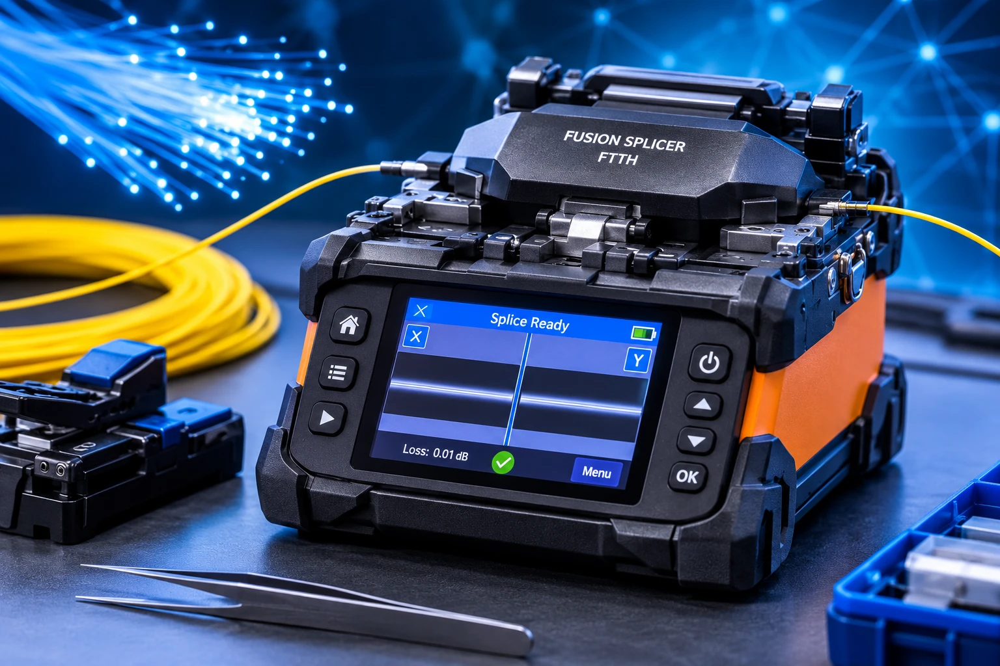
FusionadoraAlinea los núcleos y los une con un arco eléctrico
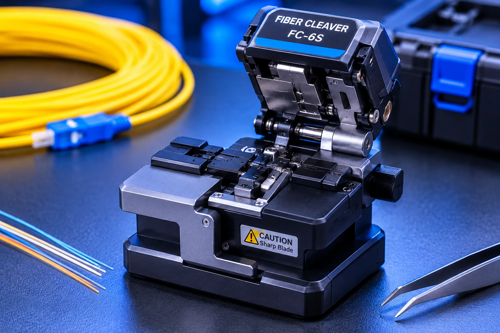
Cortadora de precisiónDeja la cara de la fibra perpendicular antes de fusionar
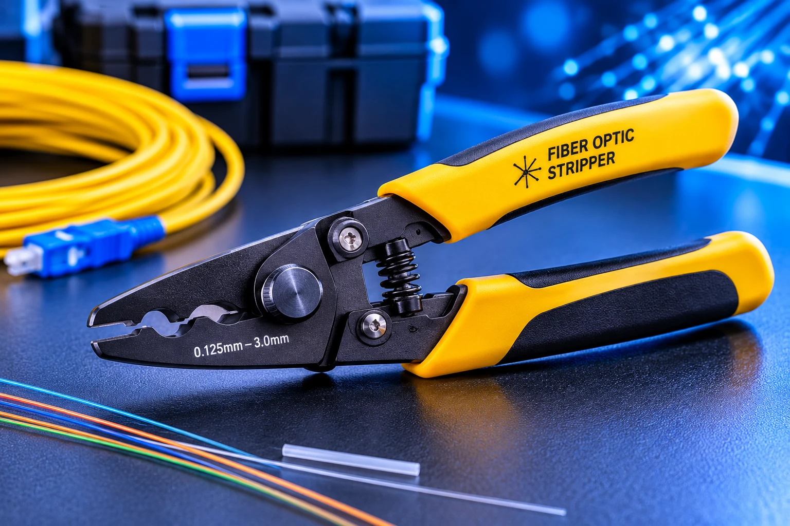
Peladora de fibraRetira el recubrimiento hasta el vidrio de 125 µm
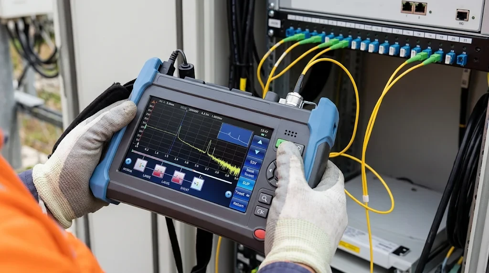
OTDRLocaliza y mide cada empalme en la traza del enlace
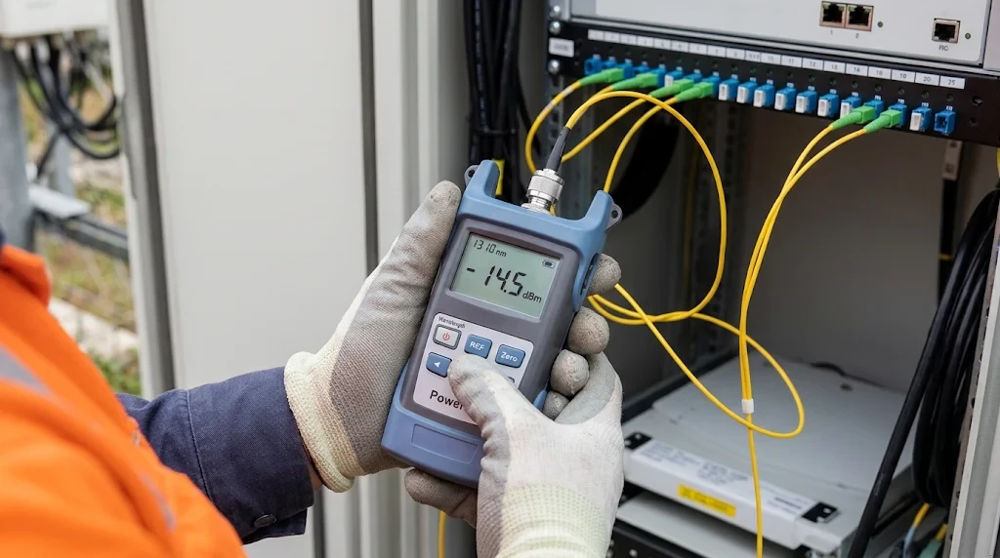
Power meter y fuenteMiden la potencia del enlace de extremo a extremo
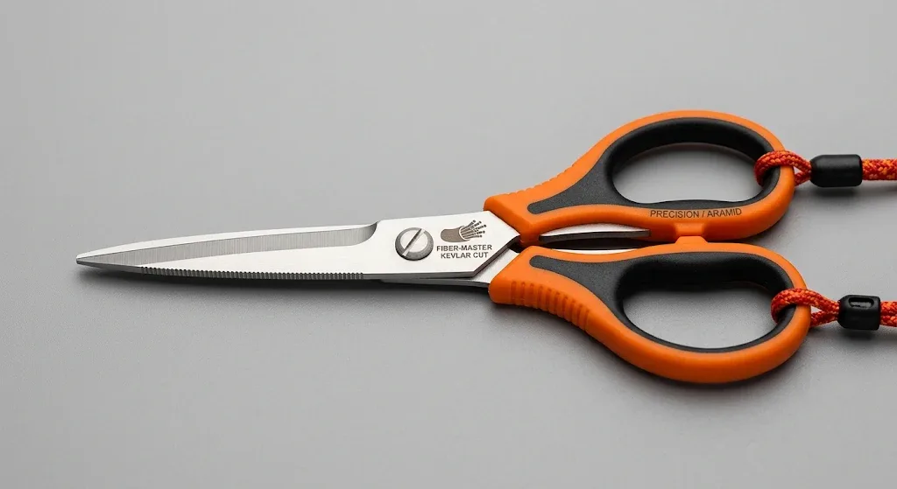
Tijeras de kevlarCortan los hilos de aramida del cable
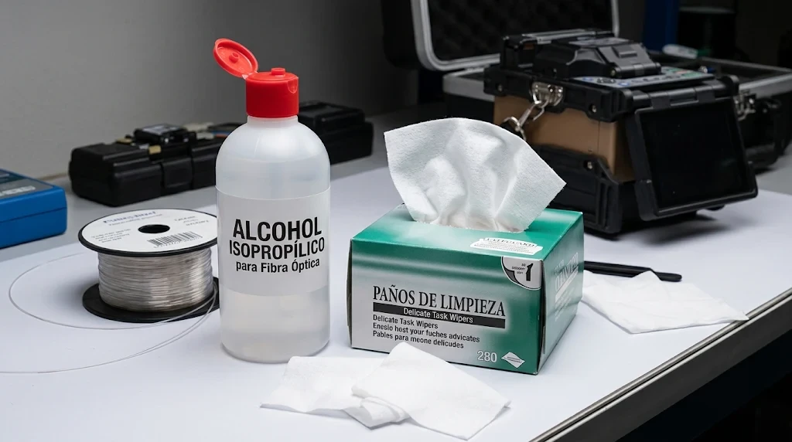
Alcohol y pañosIsopropílico ≥ 99 % y paños sin pelusa
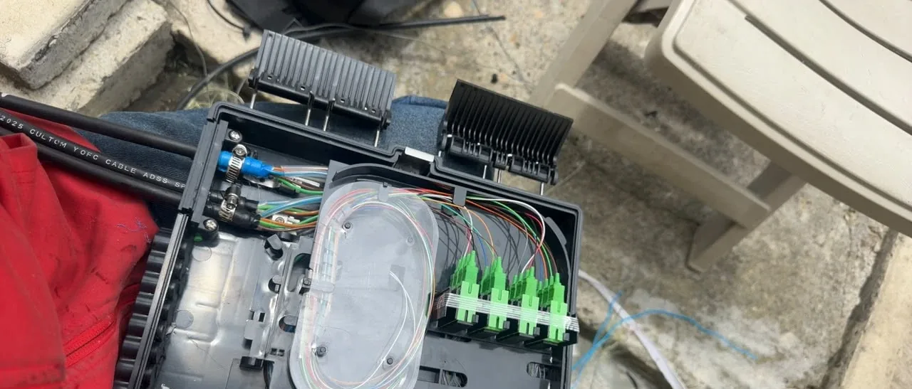
Caja NAPCierre de distribución FTTH
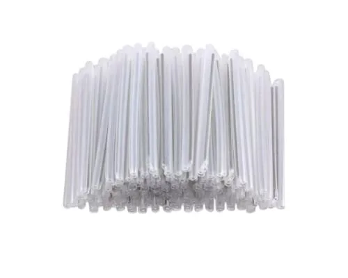
Manguitos de protecciónTermocontraíbles; protegen el empalme
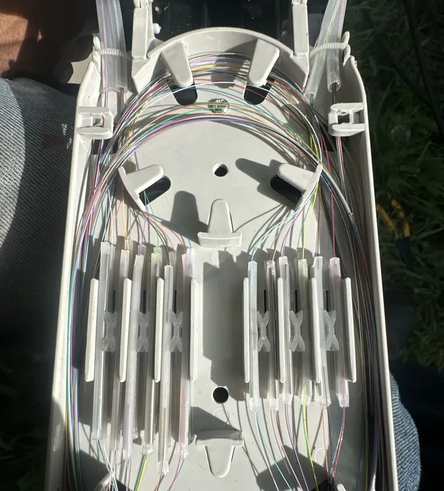
Bandejas y cassettesOrganización de empalmes
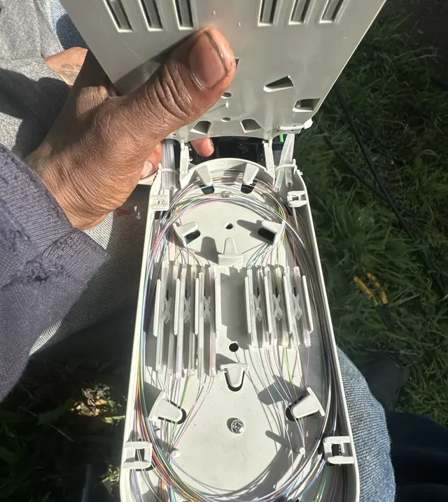
Caja de empalmeCierre de planta externa
También se usan
Carpa de trabajoProtege el área de empalme del viento, el polvo y la lluvia
EPP requerido
Mínimo exigido para el trabajo con fibra óptica. Si el empalme se ejecuta en poste o
estructura elevada, se suma el equipo completo de protección contra caídas.
Gafas de seguridadObligatorias: los fragmentos de fibra son invisibles
GuantesManipulación de cable y herramienta
Overol o bataEvita que los fragmentos queden en la ropa
CascoCon barbuquejo si hay trabajo en altura
Botas dieléctricasSi hay proximidad a redes energizadas
Arnés y eslingasSolo para empalme en poste o estructura
Riesgos y controles
Peligro
Severidad
Control
Fragmentos de fibra
Alta
Son esquirlas de vidrio de 125 µm, prácticamente invisibles, y penetran la piel
con facilidad. Gafas siempre puestas. Recipiente rígido exclusivo para residuos.
Prohibido comer, beber o fumar en el área. Lavarse las manos al terminar y
nunca pasarlas por la cara o los ojos durante el trabajo.
Radiación láser invisible
Alta
Nunca mirar directamente el extremo de una fibra ni un conector que pueda estar
activo. La luz de la red no se ve y puede dañar la retina. Verificar con power
meter que el hilo esté apagado antes de manipularlo.
Caída de altura
Alta
Aplica cuando el empalme se hace en poste. Exige certificación vigente de trabajo
en alturas, permiso de trabajo, punto de anclaje verificado, equipo de protección
contra caídas completo y plan de rescate disponible en sitio.
Contacto eléctrico
Alta
En postería compartida con red de energía, respetar las distancias de seguridad y
coordinar con el operador de red. Nunca invadir el nivel de la red eléctrica sin
autorización y sin consignación cuando corresponda.
Alcohol isopropílico
Media
Líquido inflamable. Mantener el envase cerrado y alejado del arco de la fusionadora
y de cualquier fuente de ignición. Ventilar el área. Consultar la hoja de seguridad.
Arco eléctrico de la fusionadora
Media
No operar el equipo en atmósferas con gases o vapores inflamables. Mantener la tapa
cerrada durante la descarga.
Quemadura por horno
Baja
El horno de termocontracción queda caliente al terminar el ciclo. Esperar el
enfriamiento antes de manipular el manguito.
Tránsito vehicular
Media
En trabajos sobre vía, instalar el plan de manejo de tránsito, señalización y
conos. Usar ropa de alta visibilidad.
Galería de campo
Fotos de obras de NPE, en el orden del procedimiento. Haga clic en una foto para verla
en tamaño completo.
Medición de potencia en una caja NAP · Mocoaoct 2026
En la medición de Mocoa el equipo marca −15,56 dBm y 27,79 µW en la
ventana de 1490 nm: es la misma potencia, expresada en escala logarítmica y en escala lineal.
Descargas
Ficha técnicaPDF del procedimiento · en preparación
Lista de chequeoVerificación en campo · en preparación
Formato de registroActa de empalmes · en preparación
Charla técnica
Charla técnica en preparación
Sesión con el equipo técnico de NPE
Autoevaluación
Cuestionario en preparación
Preguntas para comprobar lo aprendido